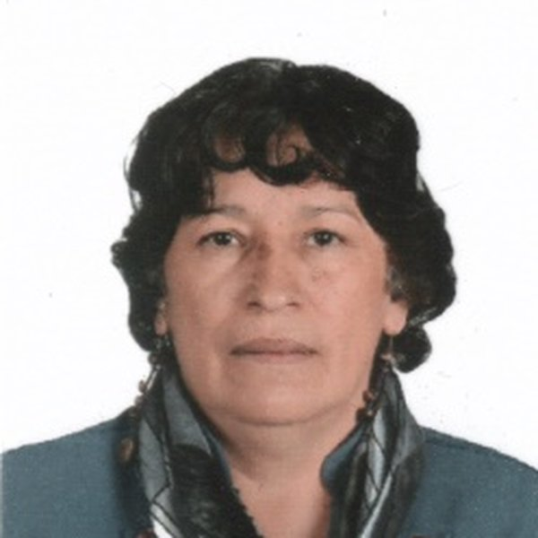

Rosa Inés Pedreros Martínez
Docente investigadora · CEPE
Licenciada en Física (Universidad Distrital, 1985), magíster en Docencia de la Física (UPN, 1995) y doctora en Educación (Doctorado Interinstitucional en Educación, 2016). Fue profesora de ciencias (1984–2004) y rectora (1991–2004) de la EPE, y es docente investigadora de la CEPE desde 1990. En la UPN dirigió el Departamento de Física y coordinó la Especialización en Docencia de las Ciencias para el Nivel Básico. Asesora las pasantías investigativas de Pedagogía Infantil y de la Licenciatura en Física de la Universidad Distrital con la CEPE. Autora de libros, artículos y ponencias, y miembro de los grupos INTERCITEC y CEPE.